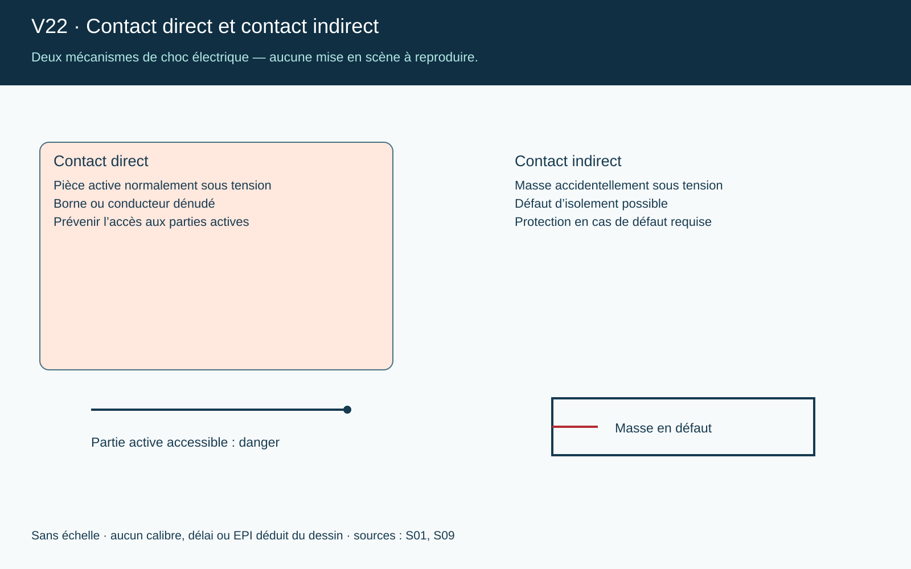

Galerie d’images
Sept schémas pour la session. Cliquez sur un visuel pour l’agrandir, puis naviguez avec les flèches.
Ils illustrent un propos : installations fictives, sans échelle, ils ne désignent aucun matériel agréé et ne remplacent ni une notice ni une prescription du site.
